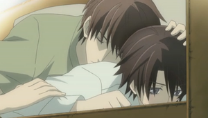

Sekaiichi Hatsukoi
 De: La Frikipedia, la enciclopedia extremadamente seria.
De: La Frikipedia, la enciclopedia extremadamente seria.
| De la serie anime para todos:
|
| Sekaiichi Hatsukoi
|
|
|
| Género:
|
Yaoi
|
| Episodios:
|
24
|
| Autor del manga:
|
La misma de Junjou Romantica
|
| Publicación:
|
Sí
|
| Publicado en:
|
CIELOS
|
| Director del anime:
|
Un japonés
|
| Transmitido en:
|
Dudosamente lo pasarían por la televisión pública, pero los japoneses son tan raros que sí lo harían
|
| Ovas:
|
2
|
| Películas:
|
Increíblemente 1
|
| Notas
|
A pesar de todo, es homosexualmente emocionante
|
«¡¡ESTO NO ES AMOR!!»
~ Onodera engañándose a si mismo.
«¿Cuántas veces tengo que violarte para que me ames?»
~ Takano consultando sus dudas a Onodera.
«Me pregunto qué se siente acostarse con un solo tipo, y del que estés enamorado.»
~ Kisa cuando se hizo el test del SIDA.
«Tengo una erección cada vez que estoy contigo.»
~ Yukina siendo sincero con Kisa.
«Entonces viólame una vez más, así comprenderé si te necesito o no.»
~ Chiaki siendo románticamente masoquista.
«Es que no pude contenerme, ¡y te violé!»
~ Hattori confesándole su acto vandálico a Chiaki.
Cuando Shungiku Nakamura estaba aburrida de Junjou Romantica y cansada de mudarse cada dos por tres, decidió darse un descanso. Cuando terminó de descansar, es decir dos minutos después, empezó un nuevo proyecto y lo llamó Sekaiichi Hatsukoi, que significa El primer amor más grande del mundo en espiñol. El manga se comenzó a publicar en el año 2007 y, para gusto de las fangirls, fue adaptado al anime en el año 2011.
Argumento
Un tipo llamado Onodera Ritsu que estaba harto de escuchar críticas por parte de sus compañeros de trabajo sobre su posición en la editorial de su padre decide, para hacerlos saber que de verdad tiene talento, cambiarse a la editorial Marukawa Shoten. Cuando llega, en vez de conseguir un puesto en el departamento de Literatura, es asignado a Emerald, un departamento de manga Shojo de aspecto deprimente y desprolijo donde nadie, nadie, NADIE quiere poner un pie. Apenas se presenta, se da cuenta de ésto y de que todos los que trabajan ahí son hombres hechos y derechos. Su jefe, don Takano Masamune, un hombre comprensivo, amable y para nada malhumorado, lo recibe de la mejor manera y lo trata de inútil. Como un verdadero idiota siempre quiere demostrarle su talento y valor a la gente, decide quedarse y hacerle ver que puede ser un estupendo editor de manga. Un día se entera que, mediante un intento fallido de violación, Takano fue su senpai de la secundaria y su primer gran amor. El día a día de Onodera y Takano.
Como sabemos, los trabajos de Nakamura se enfocan en tres o más parejas al mismo tiempo. Por lo tanto, la segunda pareja está conformada por Kisa Shouta, uno de los compañeros de trabajo de Onodera, y Yukina Kou, empleado de una librería. Kisa ha pasado un tiempo yendo a la librería, sólo para ver al hermoso, sexualmente atractivo y coqueto Yukina, el cual define como a un príncipe de manga Shojo. Su verdadero problema es que le atraen solamente los tipos de cara bonita, y aunque Yukina es uno de ellos, se da cuenta de sus sentimentos por él. Obviamente lo hace después de que el otro lo salvara del acoso de uno de sus affairs y lo llevara a su casa para confesarle que se ha enamorado de él y violarlo posteriormente.
La tercer pareja está formada por Hattori Yoshiyuki, otro compañero de trabajo de Onodera y su mangaka a cargo y mejor amigo de la infancia, Chiaki Yoshino. Hattori ha estado enamorado de Chiaki por más de 20 años y como es de lo más menso él nunca se dio cuenta, puesto que lo considera su mejor amigo, aunque el otro le haya dicho que no se preocupara por dejar la universidad y convertirse en mangaka, ya que él le iba a cuidar, cocinar, limpiar, planchar, bañar, peinar, vestir, regar las plantas y ayudarlo con su trabajo. En resumen, es su perra maid. Pero hay otro amigo de Chiaki, llamado Yuu Yanase, que también ha estado enamorado de Chiaki por mucho tiempo. Éste y Hattori se odian y disputan el amor de Chiaki mediante indirectas, insultos y otras conductas insanas como besarse con mucho odio bajo la lluvia que Chiaki no logra captar PORQUE ES TREMENDO g*$@##@@** y hasta llega a pensar que Hattori y Yuu están enamorados uno del otro (afligiéndose porque no lo invitaron a hacer un trío). Al final, Chiaki se entera de los sentimientos de ambos (los de Hattori porque lo viola y los de Yuu porque casi lo viola) y decide quedarse con Hattori y continuar la relación de amistad con Yuu. En resumen, se trata de hombres que violan a otros hombres para que se den cuenta de sus sentimentos.
Personajes principales
A ésta pareja se le llama Nostálgica, porque... bueno... algo que pasó hace años.
- Onodera Ritsu: es un
idiota muchacho de 25 años que trabajaba en el departamento de Literatura de la editorial Onodera Shuppan (incluso tuvo a cargo a un tal Usami Akihiko. Sorprendente, ¿verdad?) hasta que decidió cambiar de editorial y así fue trasladado, contra su voluntad, al departamento de manga Shojo de la editorial Marukawa, del que sinceramente, no sabe una m@*@*a no tiene idea. Onodera está traumatizado con el amor debido a que creyó que Saga-senpai, su gran amor de secundaria y el chico que estuvo viendo de reojo durante tres años (desde pequeño pervertido, ¿eh?), lo utilizaba como juguete sexual. Después de eso, tomó una decisión totalmente razonable y valiente y dejó la escuela para estudiar en el extranjero debido al shock que le había causado ser humillado de esa manera. Y aunque, no sabe nada de manga Shojo, decide quedarse y demostrarle a su jefe que no es un inútil como él piensa. Diez años atrás de la historia actual, se lo definía como una persona amanerada y acosadora dulce, amable y tímida y actualmente es alguien hostil y de mal carácter, culpando a Takano por eso. Tiene tendencias a dormir en el suelo y desmayarse en medio del ciclo.
¿Acaso no se ven mejores que Brangelina?
- Takano Masamune: es el Editor en Jefe del departamento de manga Shojo Emerald. Con tan sólo 27 años, ha logrado salvar la revista mensual en poco tiempo, por lo que lo respeta todo mundo
porque si no les tira con cualquier cosa al alcance. Al principio no se daba cuenta, pero ese editor novato que habían trasladado a su departamento es la persona de la que ha estado enamorado por diez años y que, a pesar de beber y tener toneladas de sepso acostarse con otras personas (incluyendo a Yokozawa Takafumi, del departamento Financiero), no ha podido olvidar. Cuando están a solas en una sala de la editorial después de un duro trabajo en la casa de una mangaka, ¡claro que no hablo de eso, si no de trabajo! hace recordar a Onodera, mediante besos y abrazos extremadamente cariñosos, quién era él y promete hacer que le diga que lo ama una vez más.
A ésta pareja se le llama Erótica porque como ni se ven, aprovechan para practicar el coito y comer cada vez que pueden en vez de hablar de sus sentimientos. Está justificado, después de todo son hombres.
- Kisa Shouta: es parte del equipo de Emerald. Tiene 30 años pero tiene una cara muy juvenil y baja estatura, lo cual hace pensar que es una persona muy inocente cuando ha tenido más sepso que tú, yo e IP anónima juntos. Quiere ser a toda costa como Takano y lo deprime el hecho de pensar que ha hecho todas esas cosas siendo menor que él, aunque pareciera que le encanta ser consolado por los tipos bonitos (la verdad no sé por qué aún no contrajo alguna enfermedad de transmisión sexual). Esto es habitual hasta que conoce a Yukina, empleado de la librería más visitada en ésta serie. Siempre se queda un rato hojeando mangas y mirando
con deseo a Yukina hasta que Yokozawa, como un ángel gruñón caído del cielo, los presenta uno al otro.
- Yukina Kou: es el tipo más joven de toda la serie, con 21 años, como el más wapo también. Es estudiante de Artes de la Universidad y le gusta pintar al óleo. Es un empleado de medio tiempo en una librería y con su encanto innato,
extorsiona mental y sexualmente hace que todas las chicas que van ahí compren todos los libros de la sección de la que está a cargo. (Adivinen cuál es... ¡EXACTO! manga Shojo). Tiene un talento oculto: percibir quién va a su trabajo para verlo solamente a él (JAJAJA, ¿pensaron que se trataba de otro gran talento oculto? Pues sí, también) y notó que un lindo muchachito que parecía de secundaria le prestaba demasiada atención sin disimular nada. Después de que Yokozawa los presentara, ese jovencito se despidió. De tooodas las casualidades, se lo encontró en un café y empezó a preguntarle varias cosas sobre los libros que editaba y se sorprendió al enterarse que tenía 30 años, aunque le pareció bien que alguien se viera de esa forma a su edad.  No, no es lo que parece...
A ésta pareja se llama Doméstica porque, mientras Chiaki no hace un carajo hace su trabajo, Hattori se encarga de las tareas del hogar. Todo sea por amor. Y trabajo.
- Yoshino Chiaki: es un mangaka de 28 años de edad que publica bajo el nombre de Yoshikawa Chiharu, para que no crean que es rarito (aunque vale aclarar el hecho de que sale con un hombre, ¿no?). Es
un completo cabeza hueca una persona bastante distraída que no se da cuenta que tiene a sus dos únicos amigos de la infancia persiguiéndole y olvida su propio cumpleaños. La verdad, llegó a pensar que éstos dos se gustaban y eran muy buenos amigos por la manera en que se trataban. Como todo mangaka o escritor en el mundo de Nakamura, siempre se atrasa con los plazos por lo tanto hace que Hattori entre en apuros.
- Hattori Yoshiyuki: éste tipo también tiene 28 años y es el Gerente de Edición de Emerald. Es alto, buena onda e incluso se encarga de los quehaceres domésticos. A decir verdad, es el sueño de toda muchacha. Hace veintitantos años que le gusta su mejor amigo y mangaka a cargo. Tiene una rivalidad eterna con otro mejor amigo de Chiaki que también anda haciendo fila para ganarse su corazón. Un día, decidió que no podía reprimir más su deseo sepsual y amoroso y encontró a Chiaki dormido en un sillón y le hizo toda clase de cosas malas sin su permiso y que se veía que a Chiaki no le gustaban nada (no, yo tampoco creo eso). El día después, le dijo sobre sus sentimientos de forma apropiada y ésta vez, el otro aceptó que lo violase para después poder empezar una relación. Fuera de su noviazgo y en su rol como editor, es totalmente estricto (tanto que le regaló a su novio una caja de papeles para su cumpleaños, un romántico) y eso molesta a Chiaki.
Personajes no tan principales
- Mino Kanade: es el último miembro de Emerald. No se sabe mucho de él, sólo que no hay que hacerlo enojar ni su mangaka debe atrasarse ya que en ambas ocasiones toma su navaja y se vuelve todo psicópata. Siempre se lo ve sonriendo pero la verdad es que así es su expresión porque nació con una deformidad facial que hace que no pueda abrir los ojos y dejar de mostrar los dientes.
- Yuu Yanase: otro más que tiene 28 años. Éste muchacho se obsesionó tanto con Chiaki que se convirtió en su asistente personal y tiene el Síndrome de Jack Dawson porque no para de retratarlo en diferentes poses eróticas cuando no lo está mirando y quiere a toda costa dibujarlo desnudo. Está tan enamorado de Chiaki y tan enemistado con Hattori que hasta le hace creer que es heterosexual a Chiaki (o sea caíste muy bajo, amiga). De todas formas, él lo deja en la zona de amigos porque tiene a un editor mucho más alto y responsable con quien entretenerse.
- Yokozawa Takafumi: es el Jefe del Departamento de Ventas de Marukawa y fue a la universidad con Takano, por lo tanto tiene unos 27 o 28 años aunque parezca de unos 40. Está perdidamente enamorado de Takano, tanto que le empieza a llenar la cabeza de ideas sobre a quién le pertenece y lo mal que hace su trabajo. Un día, Takano
le dice que la tiene pequeña y que no es bueno en la cama lo rechaza tan poderosamente que, siendo el famoso "Oso Gruñón de Marukawa" le quedan los ojos tan rojos que pareciera que se hubiera fumado un rollo de papel higiénico hecho de cannabis. Aunque para no verlo tan triste, le deja a cargo a su gato (¡QUÉ CONSUELO!). Decidió olvidarse de Takano y conoció a Kirishima Zen (ese tipo de cabellos locos y claros que aparece en el manga Junjou Romantica editando el trabajo de uno de los tantos fanáticos de Misaki).

Bonus: Kisa rompecorazones
- Kirishima Zen: es el Editor en jefe del Departamento de Japun y editor de "The Kan". Éste chico perdió a su esposa a temprana edad dejándolo con una pequeña hija a cargo. Debido a ésto, tiene montones de citas con chicas con la finalidad de ayudarlo a criar a su hija. Una vez en un bar, se encuentra a un hombre desolado, despechado y con signos de borrachera que resultó ser Yokozawa. Aprovechando la oportunidad, lo consuela emborrachándolo aún más y llevándolo a un hotel, mhmhmh. Al día siguiente, lo amenaza diciendo que si no se convertía en su sirvienta y madre de su hija publicaría fotos vergonzosas de él en todas las redes sociales. Imaginen qué tan vergonzosas deben ser para que Yokozawa acepte las condiciones propuestas. Es la única pareja en todo el anime que tiene hijos, debido a los superpoderes radioactivos de Yokozawa de pasar de seme a suke a uke y los de Kirishima de convertirlo a su gusto.
- Kirishima Hiyori: es la hija de Kirishima y tiene 10 años. Su madre murió cuando era muy pequeña y como su papá siendo tan atractivo no pudo encontrar ninguna madre para ella, le consiguió un padraz...digo, un padre al que ella reconoce como un hermano mayor. Las explicaciones que le esperan cuando crezca...
Bonus 2: El lado oculto de Mino
- Kohinata An: es la prometida y mejor amiga de la infancia de Onodera. Estuvo enamorada de él por mucho tiempo, incluso después de ser rechazada y no verlo por diez años. Cuando se da cuenta que Onodera
tiene tendencias más gays que el mismo Kisa está enamorado de Takano, supera sus sentimientos y cancela su matrimonio arreglado por la madre de ambos con la excusa de ver a Onodera feliz.
- Saeki: es una editora de manga Shojo de otra editorial y fue la primer amiga de Onodera en su trabajo anterior que no lo trataba de hijo de papi. Se pone molesta y quejosa cuando se emborracha y hasta hay que pagarle un taxi para que la lleve a su casa.
- Isaka Ryuuichiro: (a que éste lo conozco de otro lado) Es el hijo del dueño de Marukawa Shoten y ocupa altos cargos. Siempre anda feliz, brillando, saltando cual bailarina de ballet y con flores a su alrededor, aunque la verdad es que casi siempre tiene mucho sueño. Está enamorado de su secretario Asahina Kaoru quien es menos romántico que una piedra. Nunca recuerda el nombre de Onodera y por eso le dice «nanahikari» que significa "hijo de papi" en espiñol, aunque Isaka sabe muy bien que Onodera quiere llegar a donde está él.
- Asahina Kaoru: Es el secretario de Isaka y su novio, aunque no le gusta mezclar negocios con placer ni placer con negocios
es decir, que está totalmente en contra del sepso en la oficina. Es el tipo con ojos más rasgados de toda la historia y parece siempre que está drogado. Es tan serio que no sabe qué es el romanticismo y de vez en cuando le da regalos a Isaka. Lo más gracioso de éste hombre es que trata a su novio de usted, ¿quién hace ésto actualmente? Sí, sólo él.
¿Sabías que...
- ...Takano fue EMO en su adolescencia?
- ...en Marukawa el 99,9% de los empleados son gays?
- ...o tienen cáncer de pulmón?
- ...no es broma que Hattori violó a Chiaki?
- ...Kisa tiene amigos especiales en caso de emergencia?
- ...es cierto pero no está comprobado si son hombres o vibradores?
- ...ninguno de los personajes acepta chocolates de San Valentín si no son de sus novios?
- ...Mino es un psicópata asesino en serie que se escapó de Alcatraz
te la doy por detrás después de quemar vivos a todos?
- ...Paris Hilton tiene más neuronas que Chiaki?
- ...suponiendo que él tiene ¼ de neurona y ella ½ neurona?
- ...Yukina estaba destinado a ser modelo profesional?
- ...pero eligió la carrera de Arte porque igual servía como modelo de esculturas eróticas?
- ...si te enamoras de tu senpai actúas como estúpido?
- ...este anime incita a la violación?
- ...deberías doblar tu ropa después de lavarla?
- ...Hattori tiene una colección de corbatas ridículamente graciosas?
- ...Nakamura es devota a que todos sus personajes tengan conflictos todo el tiempo así siempre haya sepso de reconciliación?
- ...la ancianita que le pregunta en qué trabajan a Onodera y Takano en realidad es fujoshi?
- ...Kisa iba seguido a visitar la famosa "zona rosa" y hasta puede llegar a los hoteles con los ojos vendados?
- ...aparecen varios personajes de Junjou Romantica aquí?
- ...en éste anime mientras más maricas se vean más puños pegan?
- ...y mientras más machos son, a veces dicen cosas de mariposón?
- ...ya no sé qué más poner?
- ...les voy a preguntar a los guionistas de Naruto cómo debería rellenar ésta sección?
- ...no me di cuenta que eso rimó?
Autor(es):
- TheBard'sClothesAreStupid
- Manresa
Frikipedia 2005-2016, Licencia
GFDL 1.2 - Extraído por FrikiLeaks